China
Liying Yang
Information Science / Scientometrics
National Science Library, Chinese Academy of Sciences, No. 33 Beisihuan West Road, Beijing, China
We are establishing a working group. It currently has 26 members, from 19 institutions in seven countries—Australia, China, Finland, the Netherlands, Norway, Portugal and the United Kingdom—and we will continue to welcome more. Our work spans information science and scientometrics, environmental and earth sciences, agriculture, medicine, and materials and engineering.
Our working group studies how artificial intelligence is reshaping scientific research. We trace its adoption and evolution across fields through publication analysis, surveys of the research community, and cross-disciplinary comparison.
Information Science / Scientometrics
National Science Library, Chinese Academy of Sciences, No. 33 Beisihuan West Road, Beijing, China
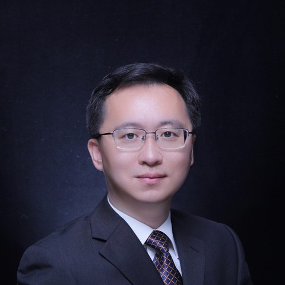
Environmental Science (biogeochemical cycling of Hg/C/S; pollution-climate interactions; AI in environmental research)
State Key Laboratory of Water Pollution Control and Green Resource Recycling, Nanjing University, Nanjing, China
Environmental Science
Institute for Ocean Engineering, Shenzhen International Graduate School, Tsinghua University, Shenzhen, China
Library and Information Science / Scientometrics
National Science Library, Chinese Academy of Sciences, No. 33 Beisihuan West Road, Beijing, China
Environmental Science
State Key Laboratory of Water Pollution Control and Green Resource Recycling, Nanjing University, Nanjing, China
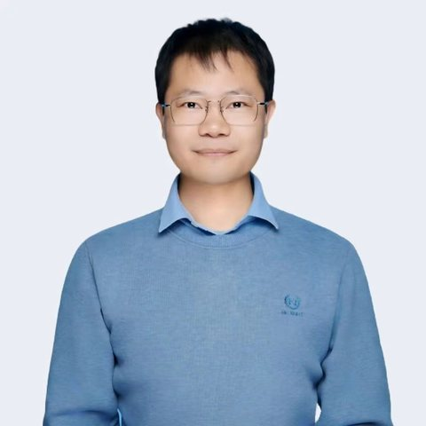
Library and Information Science
National Science Library, Chinese Academy of Sciences, No. 33 Beisihuan West Road, Beijing, China
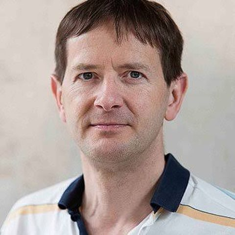
Webometrics / Information Science (quantitative science studies)
School of Information, Journalism and Communication, University of Sheffield, Sheffield, UK
Library and Information Science
National Science Library, Chinese Academy of Sciences, No. 33 Beisihuan West Road, Beijing, China
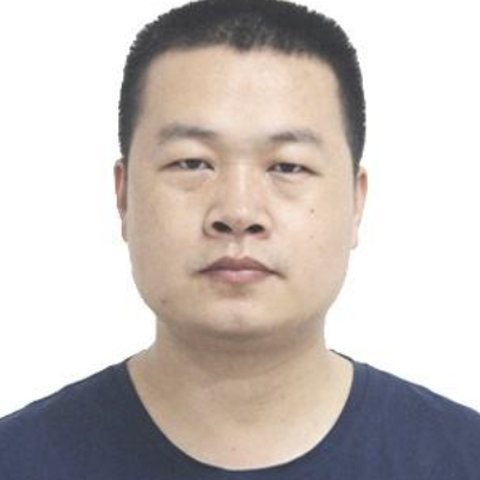
Information Engineering / Library Systems
National Science Library, Chinese Academy of Sciences, No. 33 Beisihuan West Road, Beijing, China
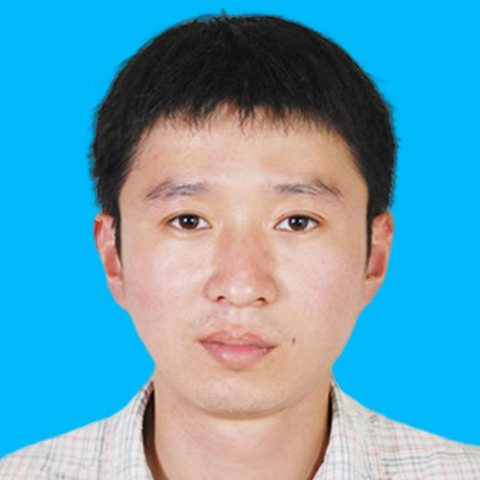
Library and Information Science
National Science Library, Chinese Academy of Sciences, No. 33 Beisihuan West Road, Beijing, China
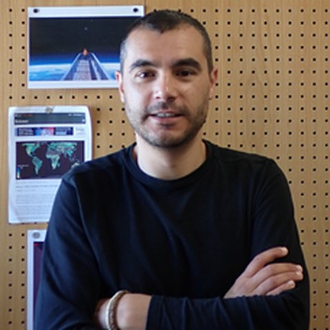
Biogeography / Species Distribution Modelling
Centre of Geographical Studies, Institute of Geography and Spatial Planning, University of Lisbon, Lisbon, Portugal
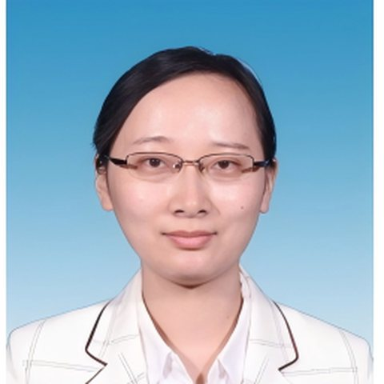
Agricultural / Irrigation Engineering
Institute of Farmland Irrigation of CAAS, Xinxiang 453002, China
Estuarine and Coastal Science
State Key Laboratory of Estuarine and Coastal Research, East China Normal University, Shanghai 200241, China
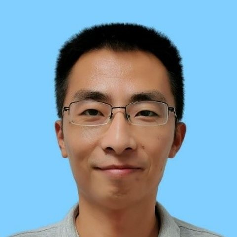
Occupational and Environmental Health
Department of Occupational and Environmental Health, School of Public Health, Tianjin Medical University, Tianjin 300070, China
Marine Ecotoxicology (Environmental Contaminants)
Institute of Marine Research, Bergen 5817, Norway
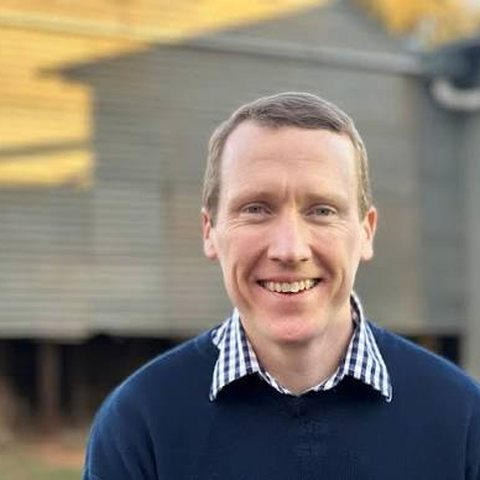
Agricultural Science (Farming Systems)
Tasmanian Institute of Agriculture, University of Tasmania, Launceston, TAS 7248, Australia
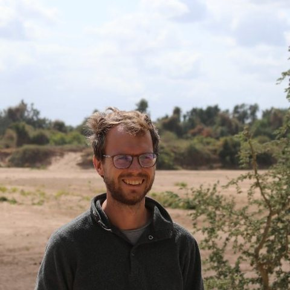
Hydrology (Catchment Hydrology / Terrestrial Water Cycling)
Department of Earth Sciences, Vrije Universiteit Amsterdam, Amsterdam, the Netherlands
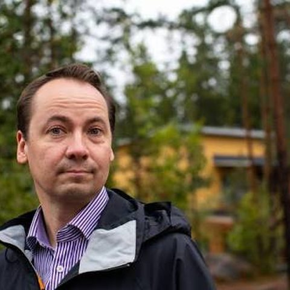
Physical Geography (Permafrost / Periglacial Geomorphology)
Geography Research Unit, University of Oulu, Oulu, 90014, Finland
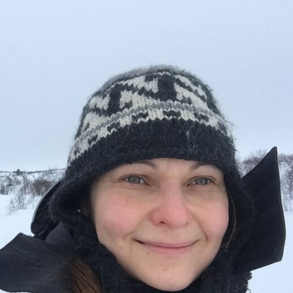
Geology (Paleolimnology / Paleoclimatology, sediment & microplastics)
Department of Geography and Geology, University of Turku, FI-20014 Turku, Finland
Burn/Trauma Medical Research
State Key Laboratory of Trauma, Burn and Combined Injury, Institute of Burn Research, Southwest Hospital, Third Military Medical University (Army Medical University), Chongqing 400038, China
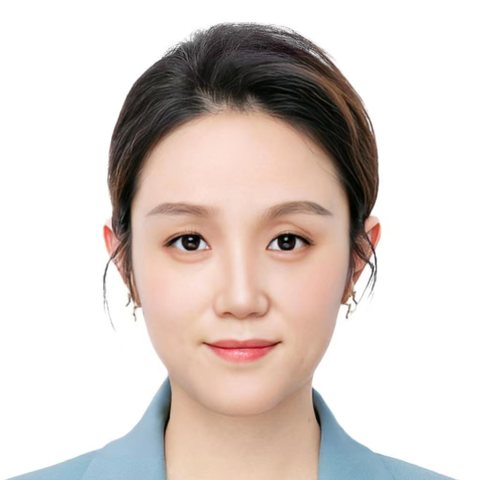
Biomass Science and Engineering
College of Biomass Science and Engineering, Sichuan University, Chengdu 610065, China
Biomass/Polyphenol-based Materials Science
BMI Center for Biomass Materials and Nanointerfaces, College of Biomass Science and Engineering, Sichuan University, Chengdu 610065, China
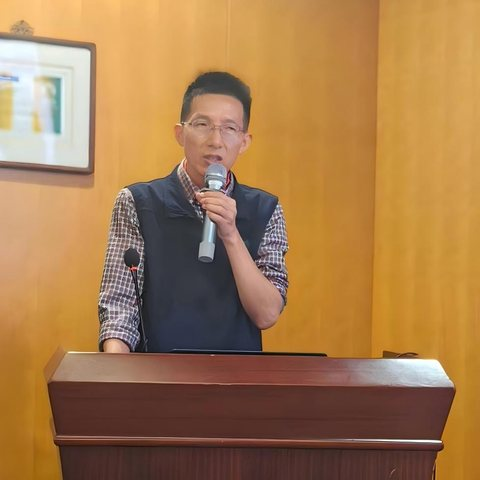
Library/Information Science (Science & Technology Information)
Science and Technology Information Center, Kunming Institute of Botany, Chinese Academy of Sciences, Kunming 650201, Yunnan, China
Quantum Functional Materials / Optoelectronic Devices (memory & neuromorphic computing)
Centre for Quantum Physics, Key Laboratory of Advanced Optoelectronic Quantum Architecture and Measurement (MOE), School of Physics, Beijing Institute of Technology, Beijing 100081, China
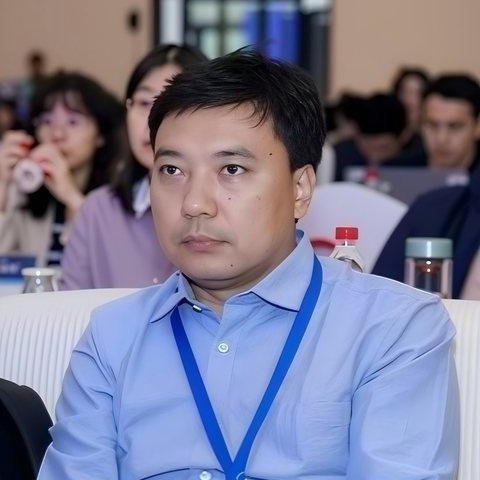
Information Management
School of Information Management, Xinjiang University of Finance and Economics, Urumqi, Xinjiang 830012, China
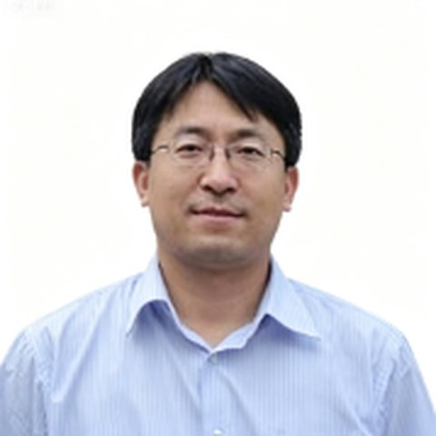
Science & Technology Policy (S&T Planning, Management and Evaluation)
Institutes of Science and Development, Chinese Academy of Sciences, Beijing 100190, China
No researchers match these filters.